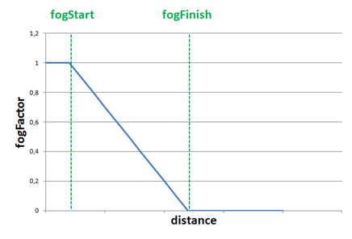
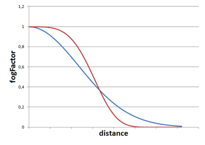

第13章 - 雾（Fog）
在本章中，我们将回顾如何在我们的游戏引擎中创建雾效果。通过这种效果，我们将模拟远处物体如何变暗并似乎消失在浓雾中。
您可以在此处找到本章的完整源代码。
概念
首先，让我们检查定义雾的属性。第一个是雾的颜色。在现实世界中，雾是灰色的，但我们可以使用这种效果来模拟被不同颜色雾侵袭的广阔区域。属性是雾的密度。
因此，为了应用雾效果，我们需要找到一种方法，随着3D场景对象离相机越来越远，将其淡入雾的颜色。靠近相机的对象不会受到雾的影响，但远处的对象将无法区分。所以我们需要能够计算一个因子，该因子可用于混合雾颜色和每个片段颜色，以模拟该效果。该因子需要取决于到相机的距离。
我们将该因子称为\(fogFactor\)，并将其范围设置为0到1。当\(fogFactor\)为1时，表示对象不会受到雾的影响，也就是说，它是一个附近的对象。当\(fogFactor\)取值为0时，表示对象将完全隐藏在雾中。
因此，计算雾颜色所需的方程是：
- \(finalColor\) 是应用雾效果后产生的颜色。
- \(fogFactor\) 是控制雾颜色和片段颜色如何混合的参数。它基本上控制着对象的可见性。
- \(fogColor\) 是雾的颜色。
- \(fragmentColor\) 是未应用任何雾效果的片段颜色。
现在我们需要找到一种方法来根据距离计算\(fogFactor\)。我们可以选择不同的模型，第一个模型可以是使用线性模型。这是一个模型，给定一个距离，以线性方式改变\(fogFactor\)的值。
线性模型可以通过以下参数定义：
- \(fogStart\)：开始应用雾效果的距离。
- \(fogFinish\)：雾效果达到最大值的距离。
- \(distance\)：到相机的距离。
使用这些参数，要应用的方程是：
对于距离小于\(fogStart\)的对象，我们只需将\(fogFactor\)设置为\(1\)。下图显示了\(fogFactor\)随距离的变化。

线性模型易于计算，但不够真实，并且没有考虑雾的密度。实际上，雾倾向于以更平滑的方式增长。因此，下一个合适的模型是指数模型。该模型的方程如下：
引入的新变量是：
- \(fogDensity\)，它模拟雾的厚度或密度。
- \(exponent\)，用于控制雾随距离增加的速度。
下图显示了上述方程在不同指数值（蓝色线为\(2\)，红色线为\(4\)）下的两个图。

在我们的代码中，我们将使用一个将指数值设置为二的公式（您可以轻松修改示例以使用不同的值）。
实现
现在理论已经解释清楚，我们可以将其付诸实践。我们将在场景片段着色器（scene.frag）中实现该效果，因为那里有我们需要的所有变量。我们将首先定义一个结构体来模拟雾属性。
active 属性将用于激活或停用雾效果。雾将通过另一个名为 fog 的统一变量传递给着色器。
我们将创建一个名为 calcFog 的函数，其定义如下。
...
vec4 calcFog(vec3 pos, vec4 color, Fog fog, vec3 ambientLight, DirLight dirLight) {
vec3 fogColor = fog.color * (ambientLight + dirLight.color * dirLight.intensity);
float distance = length(pos);
float fogFactor = 1.0 / exp((distance * fog.density) * (distance * fog.density));
fogFactor = clamp(fogFactor, 0.0, 1.0);
vec3 resultColor = mix(fogColor, color.xyz, fogFactor);
return vec4(resultColor.xyz, color.w);
}
...
正如您所见，我们首先计算到顶点的距离。顶点坐标在 pos 变量中定义，我们只需要计算长度。然后我们使用指数模型计算雾因子，指数为二（相当于乘以两次）。我们将 fogFactor 限制在 \(0\) 到 \(1\) 的范围内，并使用 mix 函数。在 GLSL 中，mix 函数用于混合雾颜色和片段颜色（由变量 color 定义）。它等效于应用以下方程：
我们还保留了原始颜色的 w 分量，即透明度。我们不希望这个分量受到影响，因为片段应该保持其透明度级别。
在片段着色器的末尾，应用所有光照效果后，如果雾处于活动状态，我们只需将返回值赋给片段颜色。
...
if (fog.activeFog == 1) {
fragColor = calcFog(outPosition, fragColor, fog, ambientLight.color, dirLight);
}
...
我们还将创建一个名为 Fog 的新类，它是另一个 POJO（Plain Old Java Object），包含雾属性。
package org.lwjglb.engine.scene;
import org.joml.Vector3f;
public class Fog {
private boolean active;
private Vector3f color;
private float density;
public Fog() {
active = false;
color = new Vector3f();
}
public Fog(boolean active, Vector3f color, float density) {
this.color = color;
this.density = density;
this.active = active;
}
public Vector3f getColor() {
return color;
}
public float getDensity() {
return density;
}
public boolean isActive() {
return active;
}
public void setActive(boolean active) {
this.active = active;
}
public void setColor(Vector3f color) {
this.color = color;
}
public void setDensity(float density) {
this.density = density;
}
}
我们将在 Scene 类中添加一个 Fog 实例。
public class Scene {
...
private Fog fog;
...
public Scene(int width, int height) {
...
fog = new Fog();
}
...
public Fog getFog() {
return fog;
}
...
public void setFog(Fog fog) {
this.fog = fog;
}
...
}
现在我们需要在 SceneRender 类中设置所有这些元素。我们首先为 Fog 结构体设置统一变量值：
public class SceneRender {
...
private void createUniforms() {
...
uniformsMap.createUniform("fog.activeFog");
uniformsMap.createUniform("fog.color");
uniformsMap.createUniform("fog.density");
}
...
}
在 render 方法中，我们需要先启用混合，然后填充 Fog 统一变量：
public class SceneRender {
...
public void render(Scene scene) {
glEnable(GL_BLEND);
glBlendEquation(GL_FUNC_ADD);
glBlendFunc(GL_SRC_ALPHA, GL_ONE_MINUS_SRC_ALPHA);
shaderProgram.bind();
...
Fog fog = scene.getFog();
uniformsMap.setUniform("fog.activeFog", fog.isActive() ? 1 : 0);
uniformsMap.setUniform("fog.color", fog.getColor());
uniformsMap.setUniform("fog.density", fog.getDensity());
...
shaderProgram.unbind();
glDisable(GL_BLEND);
}
...
}
最后，我们将修改 Main 类来设置雾，并只使用一个四边形作为地形，并进行缩放以显示雾的效果。
public class Main implements IAppLogic {
...
public static void main(String[] args) {
...
Engine gameEng = new Engine("chapter-13", new Window.WindowOptions(), main);
...
}
...
public void init(Window window, Scene scene, Render render) {
String terrainModelId = "terrain";
Model terrainModel = ModelLoader.loadModel(terrainModelId, "resources/models/terrain/terrain.obj",
scene.getTextureCache());
scene.addModel(terrainModel);
Entity terrainEntity = new Entity("terrainEntity", terrainModelId);
terrainEntity.setScale(100.0f);
terrainEntity.updateModelMatrix();
scene.addEntity(terrainEntity);
SceneLights sceneLights = new SceneLights();
AmbientLight ambientLight = sceneLights.getAmbientLight();
ambientLight.setIntensity(0.5f);
ambientLight.setColor(0.3f, 0.3f, 0.3f);
DirLight dirLight = sceneLights.getDirLight();
dirLight.setPosition(0, 1, 0);
dirLight.setIntensity(1.0f);
scene.setSceneLights(sceneLights);
SkyBox skyBox = new SkyBox("resources/models/skybox/skybox.obj", scene.getTextureCache());
skyBox.getSkyBoxEntity().setScale(50);
scene.setSkyBox(skyBox);
scene.setFog(new Fog(true, new Vector3f(0.5f, 0.5f, 0.5f), 0.95f));
scene.getCamera().moveUp(0.1f);
}
...
public void update(Window window, Scene scene, long diffTimeMillis) {
// Nothing to be done here
}
}
需要强调的一点是，我们必须明智地选择雾的颜色。当我们没有天空盒而只有固定颜色背景时，这一点尤为重要。我们应该将雾的颜色设置为与清除颜色相同。如果您取消注释渲染天空盒（Sky Box）的代码并重新运行示例，您将得到类似以下内容。
您应该能看到类似这样的画面：